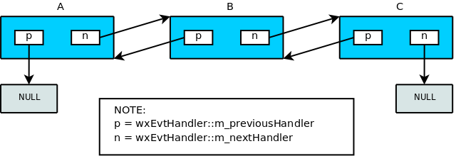

|
|
Version: 3.3.1 |
#include <wx/event.h>
 Inheritance diagram for wxEvtHandler:
Inheritance diagram for wxEvtHandler:Detailed Description
A class that can handle events from the windowing system.
wxWindow is (and therefore all window classes are) derived from this class.
When events are received, wxEvtHandler invokes the method listed in the event table using itself as the object. When using multiple inheritance it is imperative that the wxEvtHandler(-derived) class is the first class inherited such that the this pointer for the overall object will be identical to the this pointer of the wxEvtHandler portion.
Public Member Functions | |
| wxEvtHandler () | |
| Constructor. More... | |
| virtual | ~wxEvtHandler () |
| Destructor. More... | |
Event queuing and processing | |
| virtual void | QueueEvent (wxEvent *event) |
| Queue event for a later processing. More... | |
| virtual void | AddPendingEvent (const wxEvent &event) |
| Post an event to be processed later. More... | |
| template<typename T , typename T1 , ... > | |
| void | CallAfter (void(T::*method)(T1,...), T1 x1,...) |
| Asynchronously call the given method. More... | |
| template<typename T > | |
| void | CallAfter (const T &functor) |
| Asynchronously call the given functor. More... | |
| virtual bool | ProcessEvent (wxEvent &event) |
| Processes an event, searching event tables and calling zero or more suitable event handler function(s). More... | |
| bool | ProcessEventLocally (wxEvent &event) |
| Try to process the event in this handler and all those chained to it. More... | |
| bool | SafelyProcessEvent (wxEvent &event) |
| Processes an event by calling ProcessEvent() and handles any exceptions that occur in the process. More... | |
| void | ProcessPendingEvents () |
Processes the pending events previously queued using QueueEvent() or AddPendingEvent(); you must call this function only if you are sure there are pending events for this handler, otherwise a wxCHECK will fail. More... | |
| void | DeletePendingEvents () |
| Deletes all events queued on this event handler using QueueEvent() or AddPendingEvent(). More... | |
Connecting and disconnecting | |
| void | Connect (int id, int lastId, wxEventType eventType, wxObjectEventFunction function, wxObject *userData=nullptr, wxEvtHandler *eventSink=nullptr) |
| Connects the given function dynamically with the event handler, id and event type. More... | |
| void | Connect (int id, wxEventType eventType, wxObjectEventFunction function, wxObject *userData=nullptr, wxEvtHandler *eventSink=nullptr) |
| See the Connect(int, int, wxEventType, wxObjectEventFunction, wxObject*, wxEvtHandler*) overload for more info. More... | |
| void | Connect (wxEventType eventType, wxObjectEventFunction function, wxObject *userData=nullptr, wxEvtHandler *eventSink=nullptr) |
| See the Connect(int, int, wxEventType, wxObjectEventFunction, wxObject*, wxEvtHandler*) overload for more info. More... | |
| bool | Disconnect (wxEventType eventType, wxObjectEventFunction function, wxObject *userData=nullptr, wxEvtHandler *eventSink=nullptr) |
| Disconnects the given function dynamically from the event handler, using the specified parameters as search criteria and returning true if a matching function has been found and removed. More... | |
| bool | Disconnect (int id=wxID_ANY, wxEventType eventType=wxEVT_NULL, wxObjectEventFunction function=nullptr, wxObject *userData=nullptr, wxEvtHandler *eventSink=nullptr) |
| See the Disconnect(wxEventType, wxObjectEventFunction, wxObject*, wxEvtHandler*) overload for more info. More... | |
| bool | Disconnect (int id, int lastId, wxEventType eventType, wxObjectEventFunction function=nullptr, wxObject *userData=nullptr, wxEvtHandler *eventSink=nullptr) |
| See the Disconnect(wxEventType, wxObjectEventFunction, wxObject*, wxEvtHandler*) overload for more info. More... | |
Binding and Unbinding | |
| template<typename EventTag , typename Functor > | |
| void | Bind (const EventTag &eventType, Functor functor, int id=wxID_ANY, int lastId=wxID_ANY, wxObject *userData=nullptr) |
| Binds the given function, functor or method dynamically with the event. More... | |
| template<typename EventTag , typename Class , typename EventArg , typename EventHandler > | |
| void | Bind (const EventTag &eventType, void(Class::*method)(EventArg &), EventHandler *handler, int id=wxID_ANY, int lastId=wxID_ANY, wxObject *userData=nullptr) |
| See the Bind<>(const EventTag&, Functor, int, int, wxObject*) overload for more info. More... | |
| template<typename EventTag , typename Functor > | |
| bool | Unbind (const EventTag &eventType, Functor functor, int id=wxID_ANY, int lastId=wxID_ANY, wxObject *userData=nullptr) |
| Unbinds the given function, functor or method dynamically from the event handler, using the specified parameters as search criteria and returning true if a matching function has been found and removed. More... | |
| template<typename EventTag , typename Class , typename EventArg , typename EventHandler > | |
| bool | Unbind (const EventTag &eventType, void(Class::*method)(EventArg &), EventHandler *handler, int id=wxID_ANY, int lastId=wxID_ANY, wxObject *userData=nullptr) |
| See the Unbind<>(const EventTag&, Functor, int, int, wxObject*) overload for more info. More... | |
User-supplied data | |
| void * | GetClientData () const |
| Returns user-supplied client data. More... | |
| wxClientData * | GetClientObject () const |
| Returns a pointer to the user-supplied client data object. More... | |
| void | SetClientData (void *data) |
| Sets user-supplied client data. More... | |
| void | SetClientObject (wxClientData *data) |
| Set the client data object. More... | |
Event handler chaining | |
wxEvtHandler can be arranged in a double-linked list of handlers which is automatically iterated by ProcessEvent() if needed. | |
| bool | GetEvtHandlerEnabled () const |
| Returns true if the event handler is enabled, false otherwise. More... | |
| wxEvtHandler * | GetNextHandler () const |
| Returns the pointer to the next handler in the chain. More... | |
| wxEvtHandler * | GetPreviousHandler () const |
| Returns the pointer to the previous handler in the chain. More... | |
| void | SetEvtHandlerEnabled (bool enabled) |
| Enables or disables the event handler. More... | |
| virtual void | SetNextHandler (wxEvtHandler *handler) |
| Sets the pointer to the next handler. More... | |
| virtual void | SetPreviousHandler (wxEvtHandler *handler) |
| Sets the pointer to the previous handler. More... | |
| void | Unlink () |
| Unlinks this event handler from the chain it's part of (if any); then links the "previous" event handler to the "next" one (so that the chain won't be interrupted). More... | |
| bool | IsUnlinked () const |
| Returns true if the next and the previous handler pointers of this event handler instance are nullptr. More... | |
| Public Member Functions inherited from wxObject | |
| wxObject () | |
| Default ctor; initializes to nullptr the internal reference data. More... | |
| wxObject (const wxObject &other) | |
| Copy ctor. More... | |
| virtual | ~wxObject () |
| Destructor. More... | |
| virtual wxClassInfo * | GetClassInfo () const |
| This virtual function is redefined for every class that requires run-time type information, when using the wxDECLARE_CLASS macro (or similar). More... | |
| wxObjectRefData * | GetRefData () const |
| Returns the wxObject::m_refData pointer, i.e. the data referenced by this object. More... | |
| bool | IsKindOf (const wxClassInfo *info) const |
| Determines whether this class is a subclass of (or the same class as) the given class. More... | |
| bool | IsSameAs (const wxObject &obj) const |
| Returns true if this object has the same data pointer as obj. More... | |
| void | Ref (const wxObject &clone) |
| Makes this object refer to the data in clone. More... | |
| void | SetRefData (wxObjectRefData *data) |
| Sets the wxObject::m_refData pointer. More... | |
| void | UnRef () |
| Decrements the reference count in the associated data, and if it is zero, deletes the data. More... | |
| void | UnShare () |
| This is the same of AllocExclusive() but this method is public. More... | |
| void | operator delete (void *buf) |
The delete operator is defined for debugging versions of the library only, when the identifier __WXDEBUG__ is defined. More... | |
| void * | operator new (size_t size, const wxString &filename=nullptr, int lineNum=0) |
The new operator is defined for debugging versions of the library only, when the identifier __WXDEBUG__ is defined. More... | |
Static Public Member Functions | |
Global event filters. | |
Methods for working with the global list of event filters. Event filters can be defined to pre-process all the events that happen in an application, see wxEventFilter documentation for more information. | |
| static void | AddFilter (wxEventFilter *filter) |
| Add an event filter whose FilterEvent() method will be called for each and every event processed by wxWidgets. More... | |
| static void | RemoveFilter (wxEventFilter *filter) |
| Remove a filter previously installed with AddFilter(). More... | |
Protected Member Functions | |
| virtual bool | TryBefore (wxEvent &event) |
| Method called by ProcessEvent() before examining this object event tables. More... | |
| virtual bool | TryAfter (wxEvent &event) |
| Method called by ProcessEvent() as last resort. More... | |
| Protected Member Functions inherited from wxObject | |
| void | AllocExclusive () |
| Ensure that this object's data is not shared with any other object. More... | |
| virtual wxObjectRefData * | CreateRefData () const |
| Creates a new instance of the wxObjectRefData-derived class specific to this object and returns it. More... | |
| virtual wxObjectRefData * | CloneRefData (const wxObjectRefData *data) const |
| Creates a new instance of the wxObjectRefData-derived class specific to this object and initializes it copying data. More... | |
Additional Inherited Members | |
| Protected Attributes inherited from wxObject | |
| wxObjectRefData * | m_refData |
| Pointer to an object which is the object's reference-counted data. More... | |
Constructor & Destructor Documentation
◆ wxEvtHandler()
| wxEvtHandler::wxEvtHandler | ( | ) |
Constructor.
◆ ~wxEvtHandler()
|
virtual |
Destructor.
If the handler is part of a chain, the destructor will unlink itself (see Unlink()).
Member Function Documentation
◆ AddFilter()
|
static |
Add an event filter whose FilterEvent() method will be called for each and every event processed by wxWidgets.
The filters are called in LIFO order and wxApp is registered as an event filter by default. The pointer must remain valid until it's removed with RemoveFilter() and is not deleted by wxEvtHandler.
- Since
- 2.9.3
◆ AddPendingEvent()
|
virtual |
Post an event to be processed later.
This function is similar to QueueEvent() but can't be used to post events from worker threads for the event objects with wxString fields (i.e. in practice most of them) because of an unsafe use of the same wxString object which happens because the wxString field in the original event object and its copy made internally by this function share the same string buffer internally. Use QueueEvent() to avoid this.
A copy of event is made by the function, so the original can be deleted as soon as function returns (it is common that the original is created on the stack). This requires that the wxEvent::Clone() method be implemented by event so that it can be duplicated and stored until it gets processed.
- Parameters
-
event Event to add to the pending events queue.
Reimplemented in wxWindow.
◆ Bind() [1/2]
| void wxEvtHandler::Bind | ( | const EventTag & | eventType, |
| Functor | functor, | ||
| int | id = wxID_ANY, |
||
| int | lastId = wxID_ANY, |
||
| wxObject * | userData = nullptr |
||
| ) |
Binds the given function, functor or method dynamically with the event.
This offers basically the same functionality as Connect(), but it is more flexible as it also allows you to use ordinary functions and arbitrary functors as event handlers. It is also less restrictive than Connect() because you can use an arbitrary method as an event handler, whereas Connect() requires a wxEvtHandler derived handler.
See Dynamic Event Handling for more detailed explanation of this function and the Event Sample sample for usage examples.
- Parameters
-
eventType The event type to be associated with this event handler. functor The event handler functor. This can be an ordinary function but also an arbitrary functor like boost::function<>. id The first ID of the identifier range to be associated with the event handler. lastId The last ID of the identifier range to be associated with the event handler. userData Optional data to be associated with the event table entry. wxWidgets will take ownership of this pointer, i.e. it will be destroyed when the event handler is disconnected or at the program termination. This pointer can be retrieved using wxEvent::GetEventUserData() later.
- See also
- Caveats When Not Using C++ RTTI
- Since
- 2.9.0
◆ Bind() [2/2]
| void wxEvtHandler::Bind | ( | const EventTag & | eventType, |
| void(Class::*)(EventArg &) | method, | ||
| EventHandler * | handler, | ||
| int | id = wxID_ANY, |
||
| int | lastId = wxID_ANY, |
||
| wxObject * | userData = nullptr |
||
| ) |
See the Bind<>(const EventTag&, Functor, int, int, wxObject*) overload for more info.
This overload will bind the given method as the event handler.
- Parameters
-
eventType The event type to be associated with this event handler. method The event handler method. This can be an arbitrary method (doesn't need to be from a wxEvtHandler derived class). handler Object whose method should be called. It must always be specified so it can be checked at compile time whether the given method is an actual member of the given handler. id The first ID of the identifier range to be associated with the event handler. lastId The last ID of the identifier range to be associated with the event handler. userData Optional data to be associated with the event table entry. wxWidgets will take ownership of this pointer, i.e. it will be destroyed when the event handler is disconnected or at the program termination. This pointer can be retrieved using wxEvent::GetEventUserData() later.
- See also
- Caveats When Not Using C++ RTTI
- Since
- 2.9.0
◆ CallAfter() [1/2]
| void wxEvtHandler::CallAfter | ( | const T & | functor | ) |
Asynchronously call the given functor.
Calling this function on an object schedules an asynchronous call to the functor specified as CallAfter() argument at a (slightly) later time. This is useful when processing some events as certain actions typically can't be performed inside their handlers, e.g. you shouldn't show a modal dialog from a mouse click event handler as this would break the mouse capture state – but you can call a function showing this message dialog after the current event handler completes.
Notice that it is safe to use CallAfter() from other, non-GUI, threads, but that the method will be always called in the main, GUI, thread context.
This overload is particularly useful in combination with lambdas:
- Parameters
-
functor The functor to call.
- Since
- 3.0
◆ CallAfter() [2/2]
| void wxEvtHandler::CallAfter | ( | void(T::*)(T1,...) | method, |
| T1 | x1, | ||
| ... | |||
| ) |
Asynchronously call the given method.
Calling this function on an object schedules an asynchronous call to the method specified as CallAfter() argument at a (slightly) later time. This is useful when processing some events as certain actions typically can't be performed inside their handlers, e.g. you shouldn't show a modal dialog from a mouse click event handler as this would break the mouse capture state – but you can call a method showing this message dialog after the current event handler completes.
The method being called must be the method of the object on which CallAfter() itself is called.
Notice that it is safe to use CallAfter() from other, non-GUI, threads, but that the method will be always called in the main, GUI, thread context.
Example of use:
- Parameters
-
method The method to call. x1 The (optional) first parameter to pass to the method. Currently, 0, 1 or 2 parameters can be passed. If you need to pass more than 2 arguments, you can use the CallAfter<T>(const T& fn) overload that can call any functor.
- Since
- 2.9.5
◆ Connect() [1/3]
| void wxEvtHandler::Connect | ( | int | id, |
| int | lastId, | ||
| wxEventType | eventType, | ||
| wxObjectEventFunction | function, | ||
| wxObject * | userData = nullptr, |
||
| wxEvtHandler * | eventSink = nullptr |
||
| ) |
Connects the given function dynamically with the event handler, id and event type.
Notice that Bind() provides a more flexible and safer way to do the same thing as Connect(), please use it in any new code – while Connect() is not formally deprecated due to its existing widespread usage, it has no advantages compared to Bind() and has a number of drawbacks, including:
- Less compile-time safety.
- Unintuitive parameter order.
- Limited to use with the methods of the classes publicly inheriting from wxEvtHandler.
This is an alternative to the use of static event tables. It is more flexible as it allows connecting events generated by some object to an event handler defined in a different object of a different class (which is impossible to do directly with the event tables – the events can be only handled in another object if they are propagated upwards to it). Do make sure to specify the correct eventSink when connecting to an event of a different object.
See Dynamic Event Handling for more detailed explanation of this function and the Event Sample sample for usage examples.
This specific overload allows you to connect an event handler to a range of source IDs. Do not confuse source IDs with event types: source IDs identify the event generator objects (typically wxMenuItem or wxWindow objects) while the event type identify which type of events should be handled by the given function (an event generator object may generate many different types of events!).
- Parameters
-
id The first ID of the identifier range to be associated with the event handler function. lastId The last ID of the identifier range to be associated with the event handler function. eventType The event type to be associated with this event handler. function The event handler function. Note that this function should be explicitly converted to the correct type which can be done using a macro called wxFooEventHandlerfor the handler for anywxFooEvent.userData Optional data to be associated with the event table entry. wxWidgets will take ownership of this pointer, i.e. it will be destroyed when the event handler is disconnected or at the program termination. This pointer can be retrieved using wxEvent::GetEventUserData() later. eventSink Object whose member function should be called. It must be specified when connecting an event generated by one object to a member function of a different object. If it is omitted, thisis used.
wxPerl Note: In wxPerl this function takes 4 arguments: id, lastid, type, method; if method is undef, the handler is disconnected.
- See also
- Bind<>()
◆ Connect() [2/3]
| void wxEvtHandler::Connect | ( | int | id, |
| wxEventType | eventType, | ||
| wxObjectEventFunction | function, | ||
| wxObject * | userData = nullptr, |
||
| wxEvtHandler * | eventSink = nullptr |
||
| ) |
See the Connect(int, int, wxEventType, wxObjectEventFunction, wxObject*, wxEvtHandler*) overload for more info.
This overload can be used to attach an event handler to a single source ID:
Example:
wxPerl Note: Not supported by wxPerl.
◆ Connect() [3/3]
| void wxEvtHandler::Connect | ( | wxEventType | eventType, |
| wxObjectEventFunction | function, | ||
| wxObject * | userData = nullptr, |
||
| wxEvtHandler * | eventSink = nullptr |
||
| ) |
See the Connect(int, int, wxEventType, wxObjectEventFunction, wxObject*, wxEvtHandler*) overload for more info.
This overload will connect the given event handler so that regardless of the ID of the event source, the handler will be called.
wxPerl Note: Not supported by wxPerl.
◆ DeletePendingEvents()
| void wxEvtHandler::DeletePendingEvents | ( | ) |
Deletes all events queued on this event handler using QueueEvent() or AddPendingEvent().
Use with care because the events which are deleted are (obviously) not processed and this may have unwanted consequences (e.g. user actions events will be lost).
◆ Disconnect() [1/3]
| bool wxEvtHandler::Disconnect | ( | int | id, |
| int | lastId, | ||
| wxEventType | eventType, | ||
| wxObjectEventFunction | function = nullptr, |
||
| wxObject * | userData = nullptr, |
||
| wxEvtHandler * | eventSink = nullptr |
||
| ) |
See the Disconnect(wxEventType, wxObjectEventFunction, wxObject*, wxEvtHandler*) overload for more info.
This overload takes an additional range of source IDs.
wxPerl Note: In wxPerl this function takes 3 arguments: id, lastid, type.
◆ Disconnect() [2/3]
| bool wxEvtHandler::Disconnect | ( | int | id = wxID_ANY, |
| wxEventType | eventType = wxEVT_NULL, |
||
| wxObjectEventFunction | function = nullptr, |
||
| wxObject * | userData = nullptr, |
||
| wxEvtHandler * | eventSink = nullptr |
||
| ) |
See the Disconnect(wxEventType, wxObjectEventFunction, wxObject*, wxEvtHandler*) overload for more info.
This overload takes the additional id parameter.
wxPerl Note: Not supported by wxPerl.
◆ Disconnect() [3/3]
| bool wxEvtHandler::Disconnect | ( | wxEventType | eventType, |
| wxObjectEventFunction | function, | ||
| wxObject * | userData = nullptr, |
||
| wxEvtHandler * | eventSink = nullptr |
||
| ) |
Disconnects the given function dynamically from the event handler, using the specified parameters as search criteria and returning true if a matching function has been found and removed.
This method can only disconnect functions which have been added using the Connect() method. There is no way to disconnect functions connected using the (static) event tables.
- Parameters
-
eventType The event type associated with this event handler. function The event handler function. userData Data associated with the event table entry. eventSink Object whose member function should be called.
wxPerl Note: Not supported by wxPerl.
◆ GetClientData()
| void* wxEvtHandler::GetClientData | ( | ) | const |
Returns user-supplied client data.
- Remarks
- Normally, any extra data the programmer wishes to associate with the object should be made available by deriving a new class with new data members.
- See also
- SetClientData()
◆ GetClientObject()
| wxClientData* wxEvtHandler::GetClientObject | ( | ) | const |
Returns a pointer to the user-supplied client data object.
- See also
- SetClientObject(), wxClientData
◆ GetEvtHandlerEnabled()
| bool wxEvtHandler::GetEvtHandlerEnabled | ( | ) | const |
Returns true if the event handler is enabled, false otherwise.
- See also
- SetEvtHandlerEnabled()
◆ GetNextHandler()
| wxEvtHandler* wxEvtHandler::GetNextHandler | ( | ) | const |
Returns the pointer to the next handler in the chain.
◆ GetPreviousHandler()
| wxEvtHandler* wxEvtHandler::GetPreviousHandler | ( | ) | const |
Returns the pointer to the previous handler in the chain.
◆ IsUnlinked()
| bool wxEvtHandler::IsUnlinked | ( | ) | const |
Returns true if the next and the previous handler pointers of this event handler instance are nullptr.
- Since
- 2.9.0
- See also
- SetPreviousHandler(), SetNextHandler()
◆ ProcessEvent()
|
virtual |
Processes an event, searching event tables and calling zero or more suitable event handler function(s).
Normally, your application would not call this function: it is called in the wxWidgets implementation to dispatch incoming user interface events to the framework (and application).
However, you might need to call it if implementing new functionality (such as a new control) where you define new event types, as opposed to allowing the user to override virtual functions.
Notice that you don't usually need to override ProcessEvent() to customize the event handling, overriding the specially provided TryBefore() and TryAfter() functions is usually enough. For example, wxMDIParentFrame may override TryBefore() to ensure that the menu events are processed in the active child frame before being processed in the parent frame itself.
The normal order of event table searching is as follows:
- wxApp::FilterEvent() is called. If it returns anything but
-1(default) the processing stops here. - TryBefore() is called (this is where wxValidator are taken into account for wxWindow objects). If this returns true, the function exits.
- If the object is disabled (via a call to wxEvtHandler::SetEvtHandlerEnabled) the function skips to step (7).
- Dynamic event table of the handlers bound using Bind<>() is searched in the most-recently-bound to the most-early-bound order. If a handler is found, it is executed and the function returns true unless the handler used wxEvent::Skip() to indicate that it didn't handle the event in which case the search continues.
- Static events table of the handlers bound using event table macros is searched for this event handler in the order of appearance of event table macros in the source code. If this fails, the base class event table is tried, and so on until no more tables exist or an appropriate function was found. If a handler is found, the same logic as in the previous step applies.
- The search is applied down the entire chain of event handlers (usually the chain has a length of one). This chain can be formed using wxEvtHandler::SetNextHandler(): (referring to the image, if

A->ProcessEventis called and it doesn't handle the event,B->ProcessEventwill be called and so on...). Note that in the case of wxWindow you can build a stack of event handlers (see wxWindow::PushEventHandler() for more info). If any of the handlers of the chain return true, the function exits. - TryAfter() is called: for the wxWindow object this may propagate the event to the window parent (recursively). If the event is still not processed, ProcessEvent() on wxTheApp object is called as the last step.
Notice that steps (2)-(6) are performed in ProcessEventLocally() which is called by this function.
- Parameters
-
event Event to process.
- Returns
- true if a suitable event handler function was found and executed, and the function did not call wxEvent::Skip.
Reimplemented in wxWindow.
◆ ProcessEventLocally()
| bool wxEvtHandler::ProcessEventLocally | ( | wxEvent & | event | ) |
Try to process the event in this handler and all those chained to it.
As explained in ProcessEvent() documentation, the event handlers may be chained in a doubly-linked list. This function tries to process the event in this handler (including performing any pre-processing done in TryBefore(), e.g. applying validators) and all those following it in the chain until the event is processed or the chain is exhausted.
This function is called from ProcessEvent() and, in turn, calls TryBefore() and TryAfter(). It is not virtual and so cannot be overridden but can, and should, be called to forward an event to another handler instead of ProcessEvent() which would result in a duplicate call to TryAfter(), e.g. resulting in all unprocessed events being sent to the application object multiple times.
- Since
- 2.9.1
- Parameters
-
event Event to process.
- Returns
- true if this handler of one of those chained to it processed the event.
◆ ProcessPendingEvents()
| void wxEvtHandler::ProcessPendingEvents | ( | ) |
Processes the pending events previously queued using QueueEvent() or AddPendingEvent(); you must call this function only if you are sure there are pending events for this handler, otherwise a wxCHECK will fail.
The real processing still happens in ProcessEvent() which is called by this function.
Note that this function needs a valid application object (see wxAppConsole::GetInstance()) because wxApp holds the list of the event handlers with pending events and this function manipulates that list.
◆ QueueEvent()
|
virtual |
Queue event for a later processing.
This method is similar to ProcessEvent() but while the latter is synchronous, i.e. the event is processed immediately, before the function returns, this one is asynchronous and returns immediately while the event will be processed at some later time (usually during the next event loop iteration).
Another important difference is that this method takes ownership of the event parameter, i.e. it will delete it itself. This implies that the event should be allocated on the heap and that the pointer can't be used any more after the function returns (as it can be deleted at any moment).
QueueEvent() can be used for inter-thread communication from the worker threads to the main thread. It is safe in the sense that it uses locking internally and avoids the problem mentioned in AddPendingEvent() documentation by ensuring that the event object is not used by the calling thread any more.
Example:
Note that if you want to pass more data than just a single string and/or an integer carried by wxCommandEvent to the main thread, you may use wxThreadEvent instead.
Finally, notice that this method automatically wakes up the event loop if it is currently idle by calling wxWakeUpIdle() so there is no need to do it manually when using it.
- Since
- 2.9.0
- Parameters
-
event A heap-allocated event to be queued, QueueEvent() takes ownership of it. This parameter shouldn't be nullptr.
Reimplemented in wxWindow.
◆ RemoveFilter()
|
static |
Remove a filter previously installed with AddFilter().
It's an error to remove a filter that hadn't been previously added or was already removed.
- Since
- 2.9.3
◆ SafelyProcessEvent()
| bool wxEvtHandler::SafelyProcessEvent | ( | wxEvent & | event | ) |
Processes an event by calling ProcessEvent() and handles any exceptions that occur in the process.
If an exception is thrown in event handler, wxApp::OnExceptionInMainLoop is called.
- Parameters
-
event Event to process.
- Returns
- true if the event was processed, false if no handler was found or an exception was thrown.
- See also
- wxWindow::HandleWindowEvent
◆ SetClientData()
| void wxEvtHandler::SetClientData | ( | void * | data | ) |
Sets user-supplied client data.
- Parameters
-
data Data to be associated with the event handler.
- Remarks
- Normally, any extra data the programmer wishes to associate with the object should be made available by deriving a new class with new data members. You must not call this method and SetClientObject on the same class - only one of them.
- See also
- GetClientData()
◆ SetClientObject()
| void wxEvtHandler::SetClientObject | ( | wxClientData * | data | ) |
Set the client data object.
Any previous object will be deleted.
- See also
- GetClientObject(), wxClientData
◆ SetEvtHandlerEnabled()
| void wxEvtHandler::SetEvtHandlerEnabled | ( | bool | enabled | ) |
Enables or disables the event handler.
- Parameters
-
enabled true if the event handler is to be enabled, false if it is to be disabled.
- Remarks
- You can use this function to avoid having to remove the event handler from the chain, for example when implementing a dialog editor and changing from edit to test mode.
- See also
- GetEvtHandlerEnabled()
◆ SetNextHandler()
|
virtual |
Sets the pointer to the next handler.
- Remarks
- See ProcessEvent() for more info about how the chains of event handlers are internally used. Also remember that wxEvtHandler uses double-linked lists and thus if you use this function, you should also call SetPreviousHandler() on the argument passed to this function: handlerA->SetNextHandler(handlerB);handlerB->SetPreviousHandler(handlerA);
- Parameters
-
handler The event handler to be set as the next handler. Cannot be nullptr.
- See also
- How Events are Processed
Reimplemented in wxWindow.
◆ SetPreviousHandler()
|
virtual |
Sets the pointer to the previous handler.
All remarks about SetNextHandler() apply to this function as well.
- Parameters
-
handler The event handler to be set as the previous handler. Cannot be nullptr.
- See also
- How Events are Processed
Reimplemented in wxWindow.
◆ TryAfter()
|
protectedvirtual |
Method called by ProcessEvent() as last resort.
This method can be overridden to implement post-processing for the events which were not processed anywhere else.
The base class version handles forwarding the unprocessed events to wxApp at wxEvtHandler level and propagating them upwards the window child-parent chain at wxWindow level and so should usually be called when overriding this method:
- See also
- ProcessEvent()
◆ TryBefore()
|
protectedvirtual |
Method called by ProcessEvent() before examining this object event tables.
This method can be overridden to hook into the event processing logic as early as possible. You should usually call the base class version when overriding this method, even if wxEvtHandler itself does nothing here, some derived classes do use this method, e.g. wxWindow implements support for wxValidator in it.
Example:
- See also
- ProcessEvent()
◆ Unbind() [1/2]
| bool wxEvtHandler::Unbind | ( | const EventTag & | eventType, |
| Functor | functor, | ||
| int | id = wxID_ANY, |
||
| int | lastId = wxID_ANY, |
||
| wxObject * | userData = nullptr |
||
| ) |
Unbinds the given function, functor or method dynamically from the event handler, using the specified parameters as search criteria and returning true if a matching function has been found and removed.
This method can only unbind functions, functors or methods which have been added using the Bind<>() method. There is no way to unbind functions bound using the (static) event tables.
- Note
- Currently functors are compared by their address which, unfortunately, doesn't work correctly if the same address is reused for two different functor objects. Because of this, using Unbind() is not recommended if there are multiple functors using the same eventType and id and lastId as a wrong one could be unbound.
- Parameters
-
eventType The event type associated with this event handler. functor The event handler functor. This can be an ordinary function but also an arbitrary functor like boost::function<>. id The first ID of the identifier range associated with the event handler. lastId The last ID of the identifier range associated with the event handler. userData Data associated with the event table entry.
- See also
- Caveats When Not Using C++ RTTI
- Since
- 2.9.0
◆ Unbind() [2/2]
| bool wxEvtHandler::Unbind | ( | const EventTag & | eventType, |
| void(Class::*)(EventArg &) | method, | ||
| EventHandler * | handler, | ||
| int | id = wxID_ANY, |
||
| int | lastId = wxID_ANY, |
||
| wxObject * | userData = nullptr |
||
| ) |
See the Unbind<>(const EventTag&, Functor, int, int, wxObject*) overload for more info.
This overload unbinds the given method from the event..
- Parameters
-
eventType The event type associated with this event handler. method The event handler method associated with this event. handler Object whose method was called. id The first ID of the identifier range associated with the event handler. lastId The last ID of the identifier range associated with the event handler. userData Data associated with the event table entry.
- See also
- Caveats When Not Using C++ RTTI
- Since
- 2.9.0
◆ Unlink()
| void wxEvtHandler::Unlink | ( | ) |